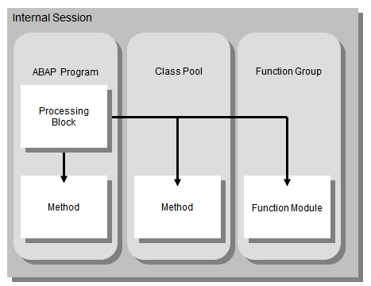

AS ABAP Release 754, ©Copyright 2019 SAP SE. All rights reserved.
ABAP Keyword Documentation → ABAP − Reference → Calling and leaving program units → Calling Processing Blocks →Calling Procedures
Procedures can be called both internally and externally. The following figure shows the most important internal and external calls.

The statements for calling procedures are
These statements supply the parameter interfaces of the procedures. When the call ends correctly, control returns to the statement after the call position.